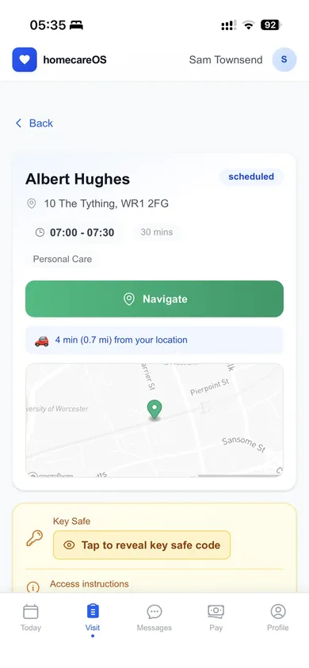

The Home Care App That Works Where the Signal Doesn't
Electronic call monitoring, eMAR, body maps and observations on the phone your carer already owns. Thirteen of those actions work with no bars at all and send themselves the moment a connection returns. Free for every carer, on iPhone and Android.
A Carer App Built for Doorsteps, Not Desks
A care worker's phone is used standing up, one handed, in the rain, with a front door key in the other hand and four minutes before the next call. Most care software ships a shrunken copy of the office screen into that situation and calls it a mobile app.
homecareOS was built the other way round. The visit screen is the product, the office is what reads it, and every decision that could have been made comfortably on a laptop was instead made for a doorstep: doses filtered to the call the carer is actually on, a skip that has to carry a reason, allergies on the same screen as the medication, and an offline queue that means a dead zone costs you a record rather than a complaint.

Download the homecareOS Carer app
Free for every carer on every plan, with no charge per install. Clock in and out, eMAR, body maps, observations, incidents, mileage, timesheets and holiday requests, on iOS 15.1 or later and on Android. Face ID or a fingerprint after the first sign in.
Everything the Visit Needs, on the Phone in Their Pocket
Tap a tab to walk through the screens a carer actually opens during a call.



Electronic Call Monitoring That Proves the Visit, Not Just the Tap
Local authority contracts are won and lost on call monitoring. Two things decide whether yours survives contact with a real round: whether you can show a carer was at the address, and whether the record still exists when the phone had no signal. Most systems get the first one half right and the second one wrong.
Four ways to clock in, one way to corroborate it
- The carer's GPS reading at the door
- 150m of the registered address
- Recorded clean, no review flag
There are four ways in, and you decide which of them your agency allows. GPS at the door. NFC, tapping the phone on a small tag left inside the home. QR, scanning a printed code. And a manual entry made by the office when something has genuinely gone wrong. Whichever was used is stamped on the visit, so the record says how arrival was established instead of merely asserting that it was, and a coordinator's manual entry is never dressed up as a verified one.
Then the part most systems skip. Every GPS, NFC and QR clock in and clock out is separately corroborated against the service user's registered address. Beyond 150 metres the record flags itself for a coordinator to look at. It is deliberately not blocked, because a rural round, a tower block or two feet of Victorian stone would otherwise lock an honest carer out of their own shift, and a system that punishes carers for their postcode gets worked around within a fortnight. A tag scanned with no GPS fix is recorded as precisely that, so the gap is on the record rather than quietly missing from it.
The result is the thing a commissioner's monitoring officer is actually asking for: not a green tick, but a defensible account of how you know.
Thirteen things that work with no signal at all
- Held on the device
- Connection returns
- In the record, in order
"Works offline" is on every competitor's feature list and usually means the carer can read their rota. Here is the actual list of what a homecareOS carer can do with no bars: clock in, clock out, complete a task, skip a task with a reason, record a medication, record an observation, record a body map, update a goal, add a care note, upload a photo, report an incident, add a handover entry and resolve one. Thirteen actions, held on the phone and sent in order the moment a connection returns.
Nobody has to remember to upload anything, and nobody writes up a morning call from memory in a car park at four in the afternoon. That is the difference between a care record and a recollection, and it is the difference an inspector reads.
Three Lists, and Three Different Meanings of a Tick
Tasks, medication and observations all look like the same list on a phone. What separates them is what a tick is allowed to mean, and software that treats all three the same is the reason records come back thin and inspections go badly.
Tasks: done, or skipped with a reason
- Completed
- Skipped, with a reason
- Not yet recorded
A task is not a checkbox with two states. The carer completes it or skips it, and a skip will not save without a reason, which is the difference between a record that says care was refused and a record that just looks unfinished. A task nobody answers stays visibly unrecorded rather than quietly filling itself in. If something has to be put right afterwards the office can amend the visit, including marking a task not applicable, and the change is kept against the name of whoever made it. The list itself is not retyped for each visit either: it comes from the person's care plan, filtered to the time of the call, so a morning task never appears on a tea-time visit.
Medication: the right doses, and what happened to each
- Due at another call
- This call, plus an hour either side
- Given
- Refused
On an ordinary call a carer sees the doses due at the visit they are on, not the person's entire prescription. A dose belongs to a call if it falls inside the visit window with an hour of grace at each end, and where two calls could both claim it the nearest one takes it, so the dose is offered at one call rather than at both. Live-in shifts, nights, long calls and a phone working from a stored copy that does not carry the schedule are the exception. Those show the whole day's doses and say so on screen, because it is safer to show a dose that belongs to another call than to hide one that is due.
Given and refused are only the two most common answers. On the phone a carer can choose six: given, refused, not available, self administered, withheld and destroyed. The office can record three more against a visit, nausea or vomiting, in hospital, and other, so the chart holds nine outcomes in all. A dose that was not given because the box was empty is a different fact from one the person turned down, and an inspector reading the MAR chart will treat them differently.
Observations: varied by type, and checked as they are entered
- Inside the expected range
- Outside it, flagged automatically
- Alert raised to the office
Observations are not one shape. Each type carries its own fields, so a fluid chart, a Bristol stool chart, a set of vital signs and a mood score each ask for what they actually need rather than forcing everything through one box.
They are also checked as they are entered. A blood sugar under 4 or over 15, an oxygen saturation under 94, a temperature over 38 or under 35.5, an abnormal stool type or colour, or any seizure at all: the record flags itself and the office is alerted. That matters because it does not depend on a carer deciding a number was worth mentioning, at the end of a long shift, on a form.
A Visit Cannot Be Quietly Half Finished
The weakest moment in every care record is the last thirty seconds of the call, when a carer is already late for the next one. This is where thin records are made, and it is the one moment most mobile apps leave entirely to goodwill.
Before a carer can clock out, you can require any of five things. Each one is your choice, and so is how hard it pushes.
Warn. The app lists what is outstanding and lets the carer go. Useful while a team is still learning the system.
Reason. The carer can still go, but has to say why, and the reason is recorded against them on the visit. This is the setting most agencies land on.
Block. Clock out is refused until it is done. The right answer on a council contract with a monitoring schedule attached, and the wrong answer almost everywhere else.
Nothing is on by default
An agency that never opens the setting holds nobody up and tells nobody off. A five carer private client agency and a sixty carer council contract need different answers here, and neither of them needs ours.
One rule, both apps, no signal needed
The phone app and the carer web app read the same rule from one shared place, so they cannot disagree about whether a visit is finished. It is worked out on the device, so it still holds standing on a doorstep with no bars.
And the note stays put
Care notes, medication records and body maps have no permissive update or delete policy in the database at all. Nobody can rewrite them afterwards: not a carer, not a coordinator, not the registered manager, not us. The record made at the door is the one an inspector reads.
Why the App Stays on the Home Screen
Carers uninstall software that wastes their time. Six reasons this one survives the first fortnight.
Thirteen offline actions
Not just reading the rota. Clocking in and out, tasks, medications, observations, body maps, goals, notes, photos, incidents and handovers all work with no bars, and send themselves when a connection returns.
Four ways to clock in
GPS, an NFC tag in the home, a printed QR code, or an office entry. Each one is stamped on the visit, and the three the carer uses on the doorstep are checked against the registered address so the office knows what it is looking at.
Notes that cannot be rewritten
Written at the point of care, not from memory hours later. Care notes, medication records and body maps have no update or delete route in the database, so the record made at the door is the permanent one.
eMAR with the allergies on screen
Only the doses due at the visit the carer is on, with that person's recorded allergies beside them, and six recordable outcomes on the phone rather than a tick box that means given or nothing.
Body maps and photos
Mark skin integrity, bruising or pressure areas on a front or back outline, and capture photographs in the same visit. Both are dated, attributed and permanent.
Face ID and a day that makes sense
Unlock with a face or a fingerprint after the first sign in, then see the day's visits with the person, the address, the time and one tap navigation. Key safe codes sit behind a deliberate tap.
Everything in the Carer App
What is on the phone today, on iPhone and on Android.
The day's visits, with the person, the address and one tap navigation
Complete and sign assigned forms, checklists and document confirmations
Clock in and out by GPS, NFC tag, QR code or office entry
Task lists drawn from the care plan and filtered to the call
Care notes written at the point of care and locked once written
Incident reporting from inside the visit it happened on
Shift handover entries, raised and resolved on the phone
eMAR with allergy warnings and six recordable outcomes on the phone
Body map marking, and visit photographs
Observations checked against clinical ranges as they are typed
Annual leave requests, availability and approval status
Mileage claims submitted from the phone
Face ID or fingerprint sign in, and push alerts
Timesheets read from the same ledger the pay run reads
Three Things No Paper Round Can Do
Recording care at the point of care, not later back at the office, improves accuracy and timeliness of records, including in an independent NIHR evaluation of care providers in England that covered home care agencies as well as care homes.
See the evidence →The Carer App, Answered Properly
Offline working, electronic call monitoring, eMAR, clock out rules and what it costs a carer.
Employee perks, built into the app
We are building carer perks and benefits directly into the app, so looking after your team is one less thing to organise. Everyday savings, wellbeing support and financial tools like earned wage access, all in the app your carers already open every day.
Put homecareOS on Your Carers' Phones This Week
Set up your agency, invite your carers, and they download the app from the App Store or Google Play. Free for your first five carers, then £10 per carer per month, and never a penny per install.
Compare homecareOS to your current software
See how we stack up against every major UK home care platform, feature-by-feature, transparent pricing, no fluff.